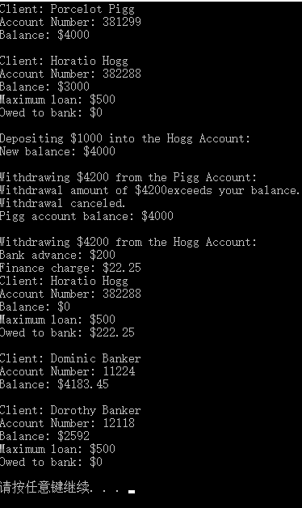

原文连接:https://www.cnblogs.com/moluoqishi/p/10746046.html
一、前言
在上一篇C++基础博文中讨论了C++最基本的代码重用特性——类继承，派生类可以在继承基类元素的同时，添加新的成员和方法。但是没有考虑一种情况：派生类继承下来的方法的实现细节并不一定适合派生类的需求，此时派生类需要重载集成方法。
二、重载方法及虚函数
我们讨论《C++ Primer Plus》中的如下场景：银行记录客户信息，包括客户姓名、当前余额。客户这一类别当然能够创建客户对象、存款、取款以及显示信息。银行需要特殊记录具有透支权限的客户，因此这一类别的客户要额外记录透支上限、透支贷款利率以及当前透支总额。此外，取款和显示信息两个操作必须考虑客户的透支情况。综上，具有透支权限的客户是客户这一基类的派生类，派生类中不但需要添加新的成员，还要重载两个继承方法。
类声明代码：


1 #ifndef BRASS_H_
2 #define BRASS_H_
3
4 #include <string>
5
6 class Brass
7 {
8 private:
9 std::string fullName;
10 long acctNum;
11 double balance;
12 public:
13 Brass(const std::string& s = "Nullbody",long an = -1,double ba = 0.0);//default constructor
14 void Deposit(double amt);
15 double Balance() const;
16 virtual void Withdraw(double amt);//virtual function
17 virtual void ViewAcct() const;
18 virtual ~Brass() {}//使用虚析构函数确保先调用继承类析构函数
19 };
20
21 //brass plus account class
22 class BrassPlus:public Brass
23 {
24 private:
25 double maxLoan;
26 double rate;
27 double owesBank;
28 public:
29 BrassPlus(const std::string& s = "Nullbody",long an = -1,
30 double bal = 0.0,double ml = 500,double r = 0.11125);
31 BrassPlus(const Brass& ba,double ml = 500,double r = 0.11125);
32 virtual void ViewAcct() const;
33 virtual void Withdraw(double amt);
34 void ResetMax(double m) {maxLoan = m;}//inline function
35 void ResetRate(double r) {rate = r;}
36 void ResetOwes() {owesBank = 0;}
37 };
38
39 #endif类方法定义代码：
1 #include"brass.h"
2 #include <iostream>
3
4 using std::cout;
5 using std::endl;
6 using std::string;
7
8 //brass methods
9 Brass::Brass(const string& s,long an,double bal)
10 {
11 fullName = s;
12 acctNum = an;
13 balance = bal;
14 }
15
16 void Brass::Deposit(double amt)
17 {
18 if(amt < 0)
19 cout << "Negative deposit not allowed;"
20 << "deposit is cancelled.\n";
21 else
22 balance += amt;
23 }
24
25 void Brass::Withdraw(double amt)
26 {
27 if(amt < 0)
28 cout << "Withdrawal amount must be positive;"
29 << "withdrawal canceled.\n";
30 else if (amt <= balance)
31 balance -= amt;
32 else
33 cout << "Withdrawal amount of $" << amt
34 << "exceeds your balance.\n"
35 << "Withdrawal canceled.\n";
36 }
37
38 double Brass::Balance() const
39 {
40 return balance;
41 }
42
43 void Brass::ViewAcct() const
44 {
45 cout << "Client: " << fullName << endl;
46 cout << "Account Number: " << acctNum << endl;
47 cout << "Balance: $" << balance << endl;
48 }
49
50 //brassPlus methods
51 BrassPlus::BrassPlus(const string& s,long an,double bal,
52 double ml,double r):Brass(s,an,bal)
53 {
54 maxLoan = ml;
55 owesBank = 0.0;
56 rate = r;
57 }
58
59 BrassPlus::BrassPlus(const Brass& ba,double ml,double r):Brass(ba)
60 {
61 maxLoan = ml;
62 owesBank = 0.0;
63 rate = r;
64 }
65
66 //redefine viewacct()
67 void BrassPlus::ViewAcct() const
68 {
69 Brass::ViewAcct();
70 cout << "Maximum loan: $" << maxLoan << endl;
71 cout << "Owed to bank: $" << owesBank << endl;
72 }
73
74 void BrassPlus::Withdraw(double amt)
75 {
76 double bal = Balance();
77 if(amt <= bal)
78 Brass::Withdraw(amt);
79 else if(amt <= bal + maxLoan - owesBank)// 已欠 + 此欠 ≤ maxLoan
80 {
81 double advance = amt - bal;
82 owesBank += advance * (1.0+rate);
83 cout << "Bank advance: $" << advance << endl;
84 cout << "Finance charge: $" << advance*rate << endl;
85 Deposit(advance);
86 Brass::Withdraw(amt);// return to zero
87 }
88 else
89 cout << "Credit limit exceeded. Transcation cancelled.\n" ;
90 } 上述代码多了一个新的语法特性：虚函数(virtual function)。当基类声明中函数前加virtual，表示该函数为虚函数。区别在于当调用者是引用或者指针时，调用的是基类方法，还是派生类重载后的方法。具体区别我们后边在讨论。重中之重在于虚析构函数的意义。如果程序中使用delete删除占用的动态内存，且用于索引内存地址的指针类型是基类，那么即使该指针指向的是一个派生类对象，此时仅基类析构函数被调用。 我们着重观察brassPlus类重载的方法WithDraw有什么变化。这类客户由于具有透支权限，在取款时肯定要考虑欠款情况。若欲取出金额≤存储金额，则直接调用基类方法WithDraw，把存储金额减小；若欲取出金额大于存储金额，就必须进一步分析欠款情况。已欠款+此次欠款≤透支额度时，取款操作才有效。因此：owes+(amt - balance) ≤ maxLoan，进一步变形为：amt ≤ balance+maxLoan-owes。
三、应用程序示例及结果分析
现在看看应用程序代码和显示结果。APP代码：
1 #include <iostream>
2 #include "brass.h"
3
4 int main()
5 {
6 using std::cout;
7 using std::endl;
8
9 Brass Piggy("Porcelot Pigg",381299,4000.00);
10 BrassPlus Hoggy("Horatio Hogg",382288,3000.00);
11
12 Piggy.ViewAcct();
13 cout << endl;
14 Hoggy.ViewAcct();
15 cout << endl;
16
17 cout << "Depositing $1000 into the Hogg Account:\n";
18 Hoggy.Deposit(1000.00);
19 cout << "New balance: $" <<Hoggy.Balance() <<endl;
20 cout << endl;
21
22 cout << "Withdrawing $4200 from the Pigg Account:\n";
23 Piggy.Withdraw(4200.00);
24 cout << "Pigg account balance: $" << Piggy.Balance() << endl;
25 cout << endl;
26
27 cout << "Withdrawing $4200 from the Hogg Account:\n";
28 Hoggy.Withdraw(4200.00);
29 Hoggy.ViewAcct();
30 cout << endl;
31
32 Brass dom("Dominic Banker",11224,4183.45);
33 BrassPlus dot("Dorothy Banker",12118,2592.00);
34
35 Brass& b1_ref = dom;
36 Brass& b2_ref = dot;//use BrassPlus::ViewAcct() function
37
38 b1_ref.ViewAcct();
39 cout << endl;
40 b2_ref.ViewAcct();
41 cout << endl;
42
43 return 0;
44 }打印结果：

Pigg和Hogg分别是基类和派生类对象。当两种均取款额度超出存储金额时，Hogg由于具有透支权限，才得以成功完成操作。注意之后创建的两个对象dom和dot，从调用ViewAcct()函数过程中再次体会虚函数的意义。若没有使用virtual关键字，程序根据引用或指针的类型选择使用基类方法还是派生类同名的重载后方法。若使用该关键字，则根据引用或指针所指向对象的类型来选择。程序中，b1_ref和b2_ref均是Brass类引用，但分别是Brass类对象dom和BrassPlus类对象dot的别名，因此使用virtual关键字后的ViewAcct()函数，依次调用基类和派生类方法。收工。